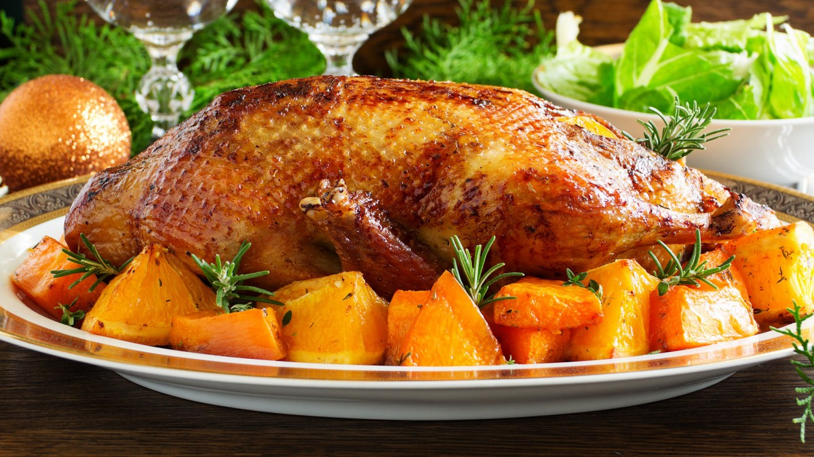
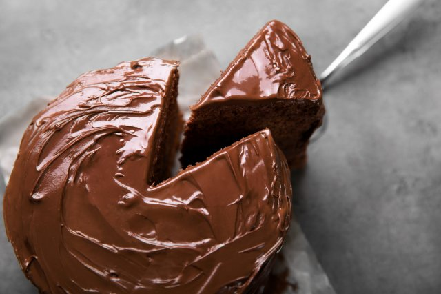

Blog de Gastronomía
Estómago lleno, corazón contento


Historial
- Pato a la naranja
- Pastel de chocolate
- Mole de olla
- Chiles en nogada
- Romeritos
- Puré de papa
- Pescado a la veracruzana
- Camarones al ajillo
- Pastel de 3 leches
- Crepas dulces
Pato a la naranja
1-Octubre-2018
- 1 pato de 1,4 kg. (aproximadamente)
- 4 naranjas de zumo
- 75 g. azúcar
- 50 ml. vinagre
- 1 vaso brandy (200 ml de líquido)
- ½ vaso de agua (100 ml. de líquido)
- Sal (al gusto)
Cómo preparar pato a la naranja. Siempre he tenido curiosidad por esta receta de carne, pato a la naranja, pero a pesar de ello nunca se me había ocurrido prepararla convencido de que tendría que ser un plato muy elaborado.
Tengo que deciros que estaba totalmente equivocado, se trata de un plato bastante sencillo de preparar, sin más complicación de la que pueda tener la preparación de un buen pollo al horno, con el suplemento de que el pato a la naranja incluye una salsa increíble.
Se trata de una receta del más clásico repertorio de cocina francesa. Aunque en España no es muy habitual prepararlo, los franceses emplean el pato en mucha mayor medida que nosotros en multitud de formas, desde todas las recetas relacionadas con su hígado, foie gras, micuit, magret de pato, hasta el propio ave en sí como es el caso de esta receta.
Lo que realmente me ha parecido genial de esta receta es su salsa, una combinación entre dulce y amargo que acompaña de manera perfecta al sabor y textura de esta carne y que es una auténtica maravilla, fácil de preparar y con un resultado totalmente de rechupete. Los ingredientes para la salsa son básicos y el proceso sencillo, Se trata de combinar la naranja, tanto su zumo como parte de su piel con parte de los jugos del asado de pato y una copita de un buen brandy.
Nos quedará una salsa densa y brillante que quedará perfecta para acompañar al pato y a cualquier guarnición con la que queramos servirlo. Como opción serían perfectas unas patatas duquesa, con lo que tendríamos en la mesa mucho de lo bueno de la gastronomía francesa.
Horneado y preparación del pato
Pelamos una naranja, la abrimos en 4 partes. La dejamos durante 1 hora macerando en un bol con ½ vaso de brandy.
Limpiamos el pato de restos de grasa y plumas que pueda tener. Lo limpiamos bien con papel de cocina, por fuera y por dentro.
Salamos el pato por el interior y lo rellenamos con la naranja que teníamos a macerar.
Colocamos el pato en una bandeja apta para horno, salamos por el exterior y regamos con el brandy de la maceración y un chorrito de aceite de oliva virgen extra.
Con el horno previamente caliente a 200º C.
Horneamos el pato durante 1,5 horas. A mitad del proceso regamos el pato con sus propios jugos. Tapamos con papel de aluminio para evitar que se tueste demasiado.
Cortamos parte de la piel de una de las naranjas, sin la parte blanca y la troceamos en tiritas finas.
Escaldamos las tiras de naranja, partiendo de agua fría, dos o tres veces, para eliminar su amargor. Reservamos.
Preparación de la salsa agridulce y presentación final del pato a la naranja
Mientras se cocina el pato en el horno nos ponemos a preparar la salsa agridulce de naranja. Para ello, en un cazo, ponemos el azúcar a temperatura media alta hasta que se haga un caramelo rubio.
Con mucho cuidado por las posibles salpicaduras, añadimos el vinagre y 200 ml. de zumo de naranja.
Cocinamos la salsa hasta que se haya reducido a la mitad.
Cuando el pato esté listo recogemos los jugos de la bandeja de horneado y los añadimos a la salsa. Tapamos el pato con papel de aluminio hasta el momento de servir.
Añadimos también a la salsa las tiras de naranja y 4 o 5 gajos de naranja.
Seguimos cocinando la salsa durante 10 minutos y ya estaría lista.
Podemos servir el pato troceado acompañado por parte de la salsa. De guarnición os aconsejo unas patatas fritas o un puré de patata. Tendremos un plato de categoría digno de cualquier celebración, un plato de rechupete.
Pastel de chocolate
30-Septiembre-2018
- 1 taza de harina
- 1 taza de azúcar
- 1/4 de taza de cocoa en polvo
- 1 cucharadita de polvo para hornear
- 1 cucharadita de bicarbonato de sodio
- 3/4 de taza de leche
- 1/4 de taza de mantequilla suave
- 1/2 cucharadita de vainilla
- 1 huevo
- 1/4 de cucharadita de sal
- 1 1/2 tazas de azúcar glass para el glaseado
- 125 gramos de chocolate para el glaseado
- 3 cucharadas de mantequilla para el glaseado
- 3 cucharadas de agua para el glaseado
Preparación
En un recipiente combinar harina, azúcar, cocoa, polvo hornear, bicarbonato y sal. Revolver a baja velocidad con la batidora .
Agregar leche, mantequilla y vainilla. Batir con batidora a velocidad baja, luego batir 2 minutos a velocidad media, agregar huevo y batir 2 minutos más. Poner en un molde redondo de 22 cms. de diámetro, engrasado y enharinado.
Hornear a 350ºF por 30 o 35 minutos. Sacar del horno y enfriar en una rejilla 10 minutos. Sacar del molde y dejar enfriar completamente.
Para hacer el glaseado: derretir chocolate y mantequilla a fuego suave, remover del fuego y agregar el azúcar glass y el agua caliente moviendo siempre. Si es necesario agregar mas de agua para tener la consistencia de glaseado.
Glasear el pastel y dejar escurrir por los lados a cubrirlo totalmente